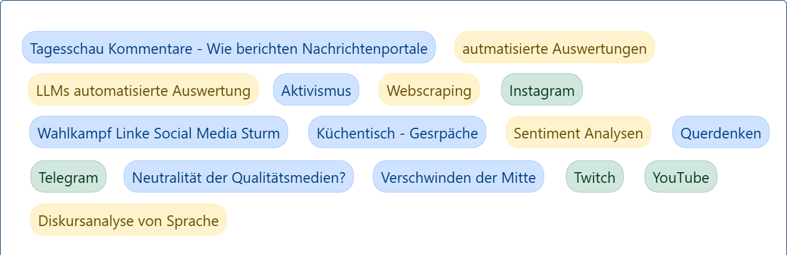
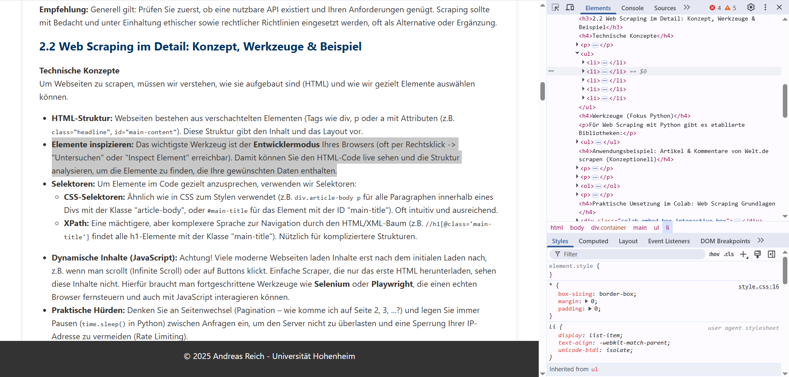

1. Einleitung: Von Themen zu Werkzeugen
In der letzten Sitzung haben wir vielfältige Themen, Plattformen und Methoden identifiziert, die uns im Bereich der politischen Online-Kommunikation interessieren. Danke für den Input!
Rückblick auf Ergebnisse aus Sitzung 1:
Heute schalten wir den Fokus um: Von den Was-Fragen (Themen wie Wahlkampf, Aktivismus, Neutralität) zu den Wie-Fragen. Wir konzentrieren uns auf die technischen Werkzeuge und Strategien, die uns erlauben, die digitale politische Sphäre systematisch zu untersuchen.
Ziel ist es, ein solides Verständnis für die Datenbeschaffung (Wie kommen wir an die Rohdaten?) und automatisierte Analysemethoden (Wie können wir große Datenmengen effizient auswerten?) zu entwickeln.
Agenda der heutigen Sitzung:
- Strategien der Datenbeschaffung: APIs vs. Web Scraping.
- Web Scraping im Detail: Konzept, Werkzeuge und ein praktisches Anwendungsbeispiel (taz.de Artikel & Kommentare).
- Plattformspezifische Datenzugänge: YouTube, TikTok, Telegram, Twitch, Instagram – Möglichkeiten und Hürden.
- Automatisierte Analysemethoden: Sentiment Analyse & Textanalyse mit Large Language Models (LLMs).
- Praktische Vertiefung: Direkte Einbindung und Besprechung von Google Colab Notebooks für Scraping, YouTube-Download, Sentiment-Analyse und LLM-Analyse.
2. Datenbeschaffung: Die Rohstoffe für unsere Analyse
Bevor wir analysieren können, brauchen wir Daten. Im digitalen Raum gibt es grundsätzlich zwei Hauptwege, um an diese Daten zu gelangen: über offizielle Schnittstellen (APIs) oder durch das direkte Auslesen von Webseiten (Web Scraping).
2.1 Grundsatzentscheidung: API vs. Web Scraping
APIs (Application Programming Interfaces): Der offizielle Weg
APIs (Application Programming Interfaces): Strukturierter Datenzugriff
Viele große Plattformen (Twitter/X, Facebook/Meta, YouTube, Reddit, Telegram etc.) bieten Schnittstellen (APIs) an, die einen strukturierten und von der Plattform vorgesehenen Zugriff auf (bestimmte) Daten ermöglichen.
- Vorteile: Daten sind oft sauberer und strukturierter als beim Scraping, der Zugriff ist "offiziell" und weniger fehleranfällig bei Änderungen der Website-Struktur.
- Nachteile: APIs haben oft Einschränkungen (Zugangsstufen, Kosten, tägliche Limits für Abfragen, nicht alle Daten sind verfügbar, Nutzungsrichtlinien können sich ändern). Erfordern meist Registrierung und Programmierkenntnisse.
(Client)
GET /tweets?q=politik&lang=de
{"tweets": [...]}
Client stellt strukturierte Anfrage an eine Plattform-API, diese verarbeitet sie und sendet strukturierte Daten zurück.
APIs sind oft der robusteste und von den Plattformen vorgesehene Weg, um Daten zu erhalten.
Web Scraping: Daten direkt von der Oberfläche
Web Scraping ist oft das Mittel der Wahl, wenn Daten öffentlich auf Webseiten zugänglich sind, aber keine strukturierte Schnittstelle (API) für den Zugriff angeboten wird oder diese nicht die gewünschten Daten liefert. Es bezeichnet den Prozess der automatisierten Extraktion von Informationen aus dem HTML-Code von Webseiten.
Konzeptioneller Ablauf:Scraping erlaubt potenziell Zugriff auf alle öffentlich sichtbaren Informationen.
Gegenüberstellung API vs. Scraping
API (Schnittstelle)
- ✅ Strukturierte, saubere Daten
- ✅ Offizieller, stabilerer Weg
- ✅ Klare Nutzungsregeln
- ❌ Oft limitierter Datenumfang
- ❌ Ratenbegrenzungen (Limits)
- ❌ Evtl. Kosten / Registrierung
- ❌ Abhängig von Plattform
Web Scraping (Auslesen)
- ✅ Zugriff auf alles öffentlich Sichtbare
- ✅ Unabhängig von API-Limits
- ❌ Technisch oft aufwändiger
- ❌ Anfällig für Website-Änderungen
- ❌ Rechtliche/Ethische Grauzone
- ❌ Serverlast für Zielseite
- ❌ Risiko von IP-Sperren
Empfehlung: Generell gilt: Prüfen Sie zuerst, ob eine nutzbare API existiert und Ihren Anforderungen genügt. Scraping sollte mit Bedacht und unter Einhaltung ethischer sowie rechtlicher Richtlinien eingesetzt werden, oft als Alternative oder Ergänzung.
2.2 Web Scraping im Detail: Konzept, Werkzeuge & Beispiel
Technische Konzepte
Um Webseiten zu scrapen, müssen wir verstehen, wie sie aufgebaut sind (HTML) und wie wir gezielt Elemente auswählen können.
- HTML-Struktur: Webseiten bestehen aus verschachtelten Elementen (Tags wie
div, p oder a mit Attributen (z.B.
class="headline",id="main-content"). Diese Struktur gibt den Inhalt und das Layout vor. - Elemente inspizieren: Das wichtigste Werkzeug ist der Entwicklermodus Ihres Browsers (oft per Rechtsklick -> "Untersuchen" oder "Inspect Element" erreichbar). Damit können Sie den HTML-Code live sehen und die Struktur analysieren, um die Elemente zu finden, die Ihre gewünschten Daten enthalten.
- Selektoren: Um Elemente im Code gezielt anzusprechen, verwenden wir Selektoren:
- CSS-Selektoren: Ähnlich wie in CSS zum Stylen verwendet (z.B.
div.article-body pfür alle Paragraphen innerhalb eines Divs mit der Klasse "article-body", oder#main-titlefür das Element mit der ID "main-title"). Oft intuitiv und ausreichend. - XPath: Eine mächtigere, aber komplexere Sprache zur Navigation durch den
HTML/XML-Baum (z.B.
//h1[@class='main-title']findet alle h1-Elemente mit der Klasse "main-title"). Nützlich für kompliziertere Strukturen.
- CSS-Selektoren: Ähnlich wie in CSS zum Stylen verwendet (z.B.
- Dynamische Inhalte (JavaScript): Achtung! Viele moderne Webseiten laden Inhalte erst nach dem initialen Laden nach, z.B. wenn man scrollt (Infinite Scroll) oder auf Buttons klickt. Einfache Scraper, die nur das erste HTML herunterladen, sehen diese Inhalte nicht. Hierfür braucht man fortgeschrittene Werkzeuge wie Selenium oder Playwright, die einen echten Browser fernsteuern und auch mit JavaScript interagieren können.
- Praktische Hürden: Denken Sie an Seitenwechsel (Pagination – wie komme ich auf
Seite 2, 3, ...?) und legen Sie immer Pausen (
time.sleep()in Python) zwischen Anfragen ein, um den Server nicht zu überlasten und eine Sperrung Ihrer IP-Adresse zu vermeiden (Rate Limiting).
Rückblick auf Ergebnisse aus Sitzung 1:
Hier sehen wir wie dieses Element im Entwicklermodus aussieht...
Werkzeuge (Fokus Python)
Für Web Scraping mit Python gibt es etablierte Bibliotheken:
requests: Zum Senden von HTTP-Anfragen und Empfangen des HTML-Codes (oder anderer Daten).BeautifulSoup4(oft mitlxmloderhtml.parser): Zum Parsen des (oft unsauberen) HTML-Codes und zur einfachen Navigation und Extraktion von Daten mittels Selektoren.Selenium/Playwright: Zur Steuerung eines echten Webbrowsers, notwendig für Webseiten mit viel JavaScript und dynamischen Inhalten.Scrapy: Ein umfassendes Framework für größere und komplexere Scraping-Projekte, das viele Aspekte wie Request-Management, Datenpipelines etc. abdeckt.
Anwendungsbeispiel: TAZ vs. Welt/ZEIT - Wann reicht Headless?
Zielsetzung: Wir wollen Artikel und Kommentare von Nachrichtenseiten sammeln. Reichen `requests` und `BeautifulSoup` (headless) oder brauchen wir Selenium?
Fall 1: TAZ.de (Headless funktioniert oft!)
Die Analyse der Seitenstruktur der TAZ (und das bereitgestellte Beispielskript) zeigt, dass Artikelinhalte und Kommentare oft direkt im initialen HTML-Code enthalten sind. Die Kommentare werden serverseitig generiert.
Konzeptioneller Ablauf (Headless mit `requests`/`BeautifulSoup`):
- Artikel-URL mit `requests` abrufen.
- HTML mit `BeautifulSoup` parsen.
- Artikel-Titel, Text, Datum etc. extrahieren.
- Kommentarbereich finden und alle darin enthaltenen Kommentare (auch verschachtelte) mit `BeautifulSoup` extrahieren.
- Speichern.
✅ Vorteil Schneller, weniger ressourcenintensiv, keine Browser-Installation nötig.
Fall 2: Welt.de / Zeit.de (Headless oft unzureichend!)
Bei vielen modernen Portalen wie Welt.de oder Zeit.de werden Kommentare und oft auch weitere Artikel/Suchergebnisse dynamisch mit JavaScript nachgeladen (z.B. durch Klick auf "Mehr laden" oder Scrollen).
Konzeptioneller Ablauf (Headless mit `requests`/`BeautifulSoup`):
- Artikel-URL mit `requests` abrufen.
- HTML mit `BeautifulSoup` parsen.
- Artikel-Titel, Text, Datum etc. extrahieren (soweit im initialen HTML).
- Kommentarbereich finden, aber nur wenige oder keine Kommentare extrahieren können, da der Rest erst durch JavaScript geladen würde.
- Speichern (mit unvollständigen Kommentardaten).
❌ Nachteil Man erhält nur einen Bruchteil der Daten (insb. Kommentare). Für vollständige Daten ist Selenium/Playwright nötig, um Klicks/Scrollen zu simulieren.
Fazit: Ob ein Headless-Ansatz genügt, hängt stark von der Technologie der Zielwebseite ab. Seiten, die Inhalte serverseitig rendern (wie oft bei TAZ), sind gut mit `requests`/`BeautifulSoup` scrapebar. Seiten mit viel dynamischem JavaScript benötigen Browser-Automatisierung.
Praktische Umsetzung im Colab: TAZ Artikel & Kommentare scrapen (Headless)
Ethik & Recht beim Scraping
Wichtige ethische und rechtliche Aspekte beim Scraping
Web Scraping bewegt sich oft in einer Grauzone. Es ist essenziell, verantwortungsvoll vorzugehen:
- Respektieren Sie
robots.txt: Diese Datei auf einer Website gibt (oft) an, welche Bereiche nicht automatisch besucht werden sollen. Auch wenn technisch umgehbar, ist die Missachtung ein starkes Signal für problematisches Verhalten und kann rechtliche Konsequenzen haben. - Prüfen Sie die Nutzungsbedingungen (Terms of Service/AGB): Viele Websites verbieten Scraping explizit. Ein Verstoß kann zur Sperrung oder rechtlichen Schritten führen.
- Seien Sie "nett" zum Server: Senden Sie Anfragen nicht zu schnell
hintereinander (implementieren Sie Pausen –
time.sleep()!). Überlasten Sie den Server nicht (Risiko einer (temporären) Sperrung Ihrer IP). Identifizieren Sie Ihren Scraper ggf. im User-Agent (obwohl dies umstritten ist). - Fokus auf öffentliche Daten: Scrapen Sie keine Daten, die einen Login erfordern oder klar als privat gekennzeichnet sind, es sei denn, Sie haben eine explizite Erlaubnis.
- Datenschutz (DSGVO/GDPR): Besondere Vorsicht bei personenbezogenen Daten (Namen, User IDs, Kommentare)! Eine Verarbeitung ist nur unter strengen Voraussetzungen erlaubt (z.B. Forschungszwecke mit sorgfältiger Abwägung, Anonymisierung, Aggregation). Holen Sie im Zweifel rechtlichen Rat ein.
- Transparenz: Dokumentieren Sie Ihr Vorgehen und Ihre Datenquellen nachvollziehbar in Ihrer Forschung.
Diese Punkte sind nicht optional! Verantwortungsvolles Scraping ist essenziell, um rechtliche Probleme und ethische Konflikte zu vermeiden. Im Zweifelsfall ist eine rechtliche Beratung oder die Suche nach alternativen Datenquellen (APIs, Kooperationen) vorzuziehen.
2.3 Plattformspezifische Datenzugänge: Ein Überblick
Neben dem direkten Scraping von Webseiten bieten viele Plattformen APIs oder es gibt spezialisierte Bibliotheken. Hier ein Überblick über gängige Plattformen und die typischen Zugangswege (Stand ~SoSe 2025, kann sich schnell ändern!):
YouTube
- API (Empfohlen): YouTube Data API v3 (offiziell, via
Python-Client
google-api-python-client). Benötigt API-Schlüssel & Quota-Management (kostenlose Kontingente vorhanden, aber limitiert). Bietet Zugriff auf Video-/Kanal-Metadaten, Suche, Kommentare etc. Der Standardweg für Forschungsdaten. - Bibliothek (Download/Basis-Metadaten):
pytube/pytubefix(Python). Primär zum Download von Videos und Abruf einfacher Metadaten (Titel, Views). Kommentarzugriff damit meist instabil oder nicht möglich.
TikTok
- API (Offiziell, restriktiv): TikTok Research API. Zugang ist stark limitiert und erfordert meist eine Bewerbung als Forschungsinstitution.
- Inoffizielle Tools (Riskant!): Bibliotheken/Scraper wie
ResearchTikPyoder andere (oft auf GitHub zu finden). Versuchen, interne (private) APIs oder die Website zu nutzen. Hohe Instabilität! TikTok ändert seine Systeme häufig, diese Tools funktionieren oft nur kurzzeitig oder unzuverlässig. Nutzung erfolgt auf eigenes Risiko und stellt potenziell einen Verstoß gegen die Nutzungsbedingungen dar. Liefern ggf. Video-Metadaten, User-Infos, Kommentare.
Telegram
- API (Client - Mächtig): Telegram Core API (via Python-Bibliotheken
wie
Telethon,Pyrogram). Ermöglicht umfassenden Zugriff auf öffentliche Kanäle/Gruppen (Nachrichten, Metadaten, Mitgliederlisten etc.). Erfordert Registrierung einer "App" bei Telegram. Wichtig: Ethische Aspekte (kein Spam, Datenschutz bei Mitgliedern!) und Nutzungsbedingungen genau beachten! - API (Bot - Einfacher): Telegram Bot API. Einfacher zu nutzen, aber beschränkt auf Interaktionen mit dem eigenen Bot (z.B. Nachrichten in Gruppen sammeln, in denen der Bot Mitglied ist). Weniger geeignet für breite Datensammlung öffentlicher Kanäle.
Twitch
- API (Offiziell): Twitch API ("Helix"). Bietet Zugriff auf Stream-Infos (live/offline, Spiel, Titel), User-Infos, Video/Clip-Metadaten. Chat-Zugriff darüber nur sehr begrenzt (primär für Moderation).
- Live Chat (IRC): Twitch's Chat basiert auf dem IRC-Protokoll. Man kann mit
Bibliotheken (z.B.
twitchioin Python) einem Kanal beitreten und den Live-Chat mitlesen und speichern. Sammlung erfordert, dass der Bot/Scraper dem Kanal beitritt, während der Stream läuft. Historische Chats sind schwer zugänglich. - Scraping: Technisch möglich, aber komplex und gegen die Nutzungsbedingungen. Fokus auf API/IRC ist sinnvoller.
- API (Offiziell, stark limitiert): Instagram Graph API / Basic Display API. Primär für Business-Accounts zur Analyse eigener Inhalte oder für Apps mit Nutzer-Login. Zugriff auf öffentliche Posts/Profile anderer Nutzer ist extrem eingeschränkt und für systematische Forschung meist nicht brauchbar.
- Inoffizielle Tools (Dringend abzuraten!): Scraper wie
instaloader(Python). Versuchen, die Website durch Emulation eines Logins/Browsers zu scrapen. Extrem instabil, hohes Risiko von Account-Sperrungen, klarer Verstoß gegen Instagrams Nutzungsbedingungen. Wegen der Aggressivität von Meta/Instagram gegen Scraping für systematische Forschung nicht empfohlen!
(Exkurs) Twitter / X
Die Situation bei Twitter/X hat sich seit der Übernahme stark verändert. Die API existiert weiterhin, aber der kostenlose Zugang wurde drastisch eingeschränkt. Für Forschungszwecke relevante Datenmengen erfordern nun meist teure kommerzielle Pakete, was die Forschung erheblich erschwert.
Fazit zu Plattformen: Der Datenzugang variiert enorm. Offizielle APIs sind, wo verfügbar und ausreichend, der sicherste Weg. Inoffizielle Methoden sind oft technisch fragil und bergen erhebliche Risiken (Sperrung, Rechtsverstoß). Prüfen Sie immer die aktuellen Nutzungsbedingungen und handeln Sie verantwortungsbewusst und ethisch!
3. Automatisierte Analysemethoden: Muster in Daten erkennen
Nachdem wir die Daten beschafft haben, geht es an die Analyse. Gerade bei großen Textmengen aus Online-Quellen stoßen manuelle Verfahren an Grenzen. Hier kommen automatisierte Methoden ins Spiel.
3.1 Sentiment Analyse: Stimmungen messen
Konzept: Sentiment Analyse (oder Opinion Mining) zielt darauf ab, die in einem Text ausgedrückte Haltung oder Emotion automatisch zu erkennen. Üblicherweise wird nach Polarität unterschieden (positiv, negativ, neutral), manchmal auch nach spezifischen Emotionen (Freude, Ärger, Angst etc.). Es gibt verschiedene Ansätze:
- Lexikon-basierte Ansätze: Nutzen Wörterbücher mit vordefinierten Polaritätswerten für einzelne Wörter (z.B. "gut" = +1, "schlecht" = -1). Einfach umzusetzen, aber oft ungenau bei Kontext, Ironie etc. (Beispiel: VADER).
- Machine-Learning-basierte Ansätze: Modelle werden auf großen Mengen von Texten trainiert, deren Sentiment bekannt ist. Sie lernen Muster und können oft kontextsensitiver urteilen. Moderne Ansätze nutzen oft Transformer-Modelle (wie BERT, RoBERTa).
Werkzeuge (Python):
VADER (Valence Aware Dictionary and sEntiment Reasoner): Lexikon-basiert, speziell für Social-Media-Texte optimiert (berücksichtigt z.B. Emojis, Großschreibung).TextBlob: Einfache Bibliothek, die Polarität (positiv/negativ) und Subjektivität (objektiv/subjektiv) liefert.- Hugging Face
transformersBibliothek: Bietet Zugang zu tausenden vortrainierten Modellen, darunter viele leistungsstarke Modelle für Sentiment Analyse in verschiedenen Sprachen (auch Deutsch). Die Nutzung über diepipeline()-Funktion ist oft sehr einfach, wie im Colab gezeigt wird.
Anwendungsbezug: Wir können diese Methode nutzen, um z.B. die Tonalität der zuvor gesammelten TAZ.de-Kommentare zu analysieren und zu sehen, wie über die Artikel diskutiert wird – überwiegen positive, negative oder neutrale Kommentare?
Praktische Umsetzung im Colab: Sentiment Analyse
Limitationen der Sentiment Analyse beachten!
Automatisierte Sentiment Analyse ist ein nützliches Werkzeug, aber keine "Wahrheitsmaschine". Seien Sie sich der Grenzen bewusst:
- Kontextabhängigkeit: Die Bedeutung von Wörtern kann sich je nach Kontext stark ändern.
- Ironie & Sarkasmus: Werden von den meisten Modellen schlecht oder gar nicht erkannt.
- Mehrdeutigkeit & Negation: Komplexe Satzstrukturen können zu Fehlinterpretationen führen.
- Domänenspezifische Sprache: Politischer Jargon oder Fachbegriffe sind oft nicht in den allgemeinen Trainingsdaten enthalten.
Fazit: Ergebnisse immer kritisch prüfen! Betrachten Sie sie als Indikatoren, nicht als absolute Fakten. Eine manuelle Validierung an einer Teilstichprobe ist oft sinnvoll.
3.2 Automatisierte Inhaltsanalyse mit LLMs: Jenseits von Sentiment
Konzept: Large Language Models (LLMs) – die Technologie hinter Systemen wie ChatGPT, Llama, Mistral etc. – können nicht nur Text generieren, sondern auch für komplexe Analyseaufgaben eingesetzt werden, die traditionell zeitaufwändige menschliche Codierung erforderten. Durch geschickte Anweisungen (Prompts) kann man LLMs dazu bringen, Texte nach bestimmten Kriterien zu klassifizieren, Informationen zu extrahieren oder sogar zu bewerten.
Man unterscheidet oft:
- Zero-Shot Learning: Das LLM führt eine Aufgabe aus, für die es nicht explizit trainiert wurde, nur basierend auf der Anweisung im Prompt.
- Few-Shot Learning: Man gibt dem LLM im Prompt einige Beispiele, wie die Aufgabe zu lösen ist, um die Genauigkeit zu verbessern.
Mögliche Anwendungen in der politischen Kommunikationsforschung:
- Themenklassifikation: Automatische Zuordnung von Texten (z.B. Tweets, Artikel, Kommentare) zu vordefinierten politischen Themen (z.B. Umwelt, Wirtschaft, Soziales).
- Frame-Analyse: Erkennung, welche Deutungsrahmen (Frames) in einem Text verwendet werden (z.B. Sicherheit vs. Freiheit, Chance vs. Risiko).
- Argumentationsanalyse: Identifikation von Argumenten, Begründungen, Forderungen oder sogar spezifischen Argumentationstypen.
- Akteursextraktion: Automatische Erkennung und Extraktion von genannten politischen Akteuren (Personen, Parteien, Organisationen).
- Nuancierte Emotions-/Tonalitätsanalyse: Über einfache Polarität hinausgehende Analysen (z.B. Erkennung von Ärger, Zynismus, Unterstützung).
- Zusammenfassung: Automatische Erstellung von Zusammenfassungen großer Textmengen oder langer Debatten.
Zugangswege & Werkzeuge
- APIs (Cloud-basiert): Anbieter wie OpenAI (GPT-Modelle), Anthropic
(Claude-Modelle), Google (Gemini-Modelle) bieten APIs an.
- Vorteile: Oft die leistungsstärksten Modelle, einfacher Einstieg über Bibliotheken
(z.B.
openaiin Python). - Nachteile: Kosten (Bezahlung pro Nutzung/Token), Datenschutzbedenken (Was passiert mit den Daten, die zur Analyse gesendet werden? Nutzungsbedingungen prüfen!), Abhängigkeit vom Anbieter.
- Vorteile: Oft die leistungsstärksten Modelle, einfacher Einstieg über Bibliotheken
(z.B.
- Hugging Face Hub &
transformersBibliothek: Eine riesige Plattform für Open-Source-Modelle.- Vorteile: Große Auswahl an Modellen (viele auch für Deutsch), oft kostenlos nutzbar (lokal oder über Hugging Face Inference Endpoints), mehr Kontrolle.
- Nachteile: Benötigt oft mehr technisches Setup, Leistung der Modelle variiert, Hardware-Anforderungen für lokale Nutzung können hoch sein.
- Lokale Modelle (Fortgeschritten): Open-Source-Modelle (z.B. Llama 3, Mistral,
Mixtral) können mit Tools wie
ollama,LM Studiooder direkt über Hugging Face-Bibliotheken heruntergeladen und auf dem eigenen Rechner ausgeführt werden.- Vorteile: Volle Datenkontrolle (keine Daten verlassen den Rechner), keine API-Kosten.
- Nachteile: Erfordert sehr leistungsstarke Hardware (insbesondere eine GPU mit viel VRAM – oft 12GB+ für brauchbare Modelle), langsamer als Cloud-APIs, technischer Aufwand bei Installation und Nutzung.
- Frameworks (Optional): Für komplexere Abläufe (z.B. Kombination von LLM-Aufrufen,
Einbindung externer Daten) gibt es Frameworks wie
LangChainoderLlamaIndex.
Potenziale vs. Herausforderungen & Risiken
Potenziale von LLMs
- ✅ Enorme Skalierbarkeit für große Datenmengen
- ✅ Analyse komplexer semantischer Merkmale (Themen, Frames etc.)
- ✅ Hohe Flexibilität durch Prompt Engineering
- ✅ Potenzial für neue Forschungsfragen
Herausforderungen & Risiken
- üî¥ Kosten (insbesondere APIs)
- üî¥ Reproduzierbarkeit (Modelle √§ndern sich)
- üî¥ Abh√§ngigkeit von Prompt-Qualit√§t
- üî¥ Validierungsaufwand! (Ergebnisse M√úSSEN gepr√ºft werden)
- üî¥ Risiko von Bias & Stereotypen aus Trainingsdaten
- üî¥ "Halluzinationen" (Erfinden von Fakten)
- üî¥ Datenschutz bei API-Nutzung
- üî¥ Hohe Hardware-Anforderungen (lokal)
Anwendungsbezug: Mit einem LLM könnten wir die zuvor gesammelten taz.de-Artikeltexte systematisch analysieren. Wir könnten z.B. untersuchen welche Hauptargumente pro/contra 'Klimawandel' werden genannt? Welche Akteure kommen zu Wort? Welche Frames (z.B. 'Klimaschutz' vs. 'Rechtsbruch' vs. 'ziviler Ungehorsam') dominieren die Berichterstattung? Wir werden das LLM bitten, die Ergebnisse direkt in einem strukturierten Format (z.B. JSON) auszugeben.
Praktische Umsetzung im Colab: Textanalyse mit LLMs
Fazit zu LLMs: LLMs eröffnen faszinierende neue Wege für die Analyse politischer Kommunikation im großen Maßstab. Sie ersetzen jedoch nicht die Notwendigkeit einer soliden Methodik und kritischen Reflexion. Der Validierungsaufwand ist zentral – vertrauen Sie den Ergebnissen nicht blind, sondern prüfen Sie sie systematisch (z.B. durch Vergleich mit manueller Codierung an einer Teilstichprobe).
4. Verknüpfung: Von Daten und Methoden zur Erkenntnis
Die eigentliche Stärke entfaltet sich oft erst in der Kombination der vorgestellten Techniken: Die Datenbeschaffungsstrategien (Abschnitt 2) liefern uns das Rohmaterial aus der digitalen Welt, und die automatisierten Analysemethoden (Abschnitt 3) helfen uns dabei, in diesen (oft riesigen) Datenmengen Muster, Trends und Einsichten zu entdecken.
So könnten wir beispielsweise via Telegram API gesammelte Nachrichten aus öffentlichen politischen Kanälen (Datenbeschaffung) anschließend mit LLMs auf wiederkehrende Narrative oder Framing-Strategien untersuchen (Analyse).
5. Ausblick & Nächste Schritte
Wir haben heute einen ersten kleinen Einblick in die technischen Grundlagen der Datenbeschaffung und automatisierten Analyse gewonnen. Die bereitgestellten Google Colab Notebooks (Web Scraping, YouTube Download, Sentiment Analyse, LLM Analyse) bieten Ihnen die Möglichkeit, diese Techniken selbst praktisch auszuprobieren und zu vertiefen.
Nutzen Sie diese Werkzeuge und Konzepte als Inspiration und Grundlage für Ihre eigenen Forschungsideen und die anstehenden Hausarbeiten. Überlegen Sie, welche Datenquellen für Ihre Fragestellung relevant sein könnten und welche Analysemethoden (automatisiert oder auch klassisch qualitativ/quantitativ) Ihnen helfen könnten, diese zu beantworten.
Ausblick auf Sitzung 3: In der nächsten Sitzung werden wir uns stärker mit konkreten Forschungsdesigns beschäftigen. Wir diskutieren, wie Sie die heute vorgestellten Methoden (und andere) sinnvoll in Ihr Forschungsprojekt integrieren können, von der Fragestellung über die Datenerhebung und Analyse bis hin zur Interpretation. Wir werden auch noch mehr Zeit haben, erste Ideen und Fragen zu Ihren Hausarbeiten zu besprechen.